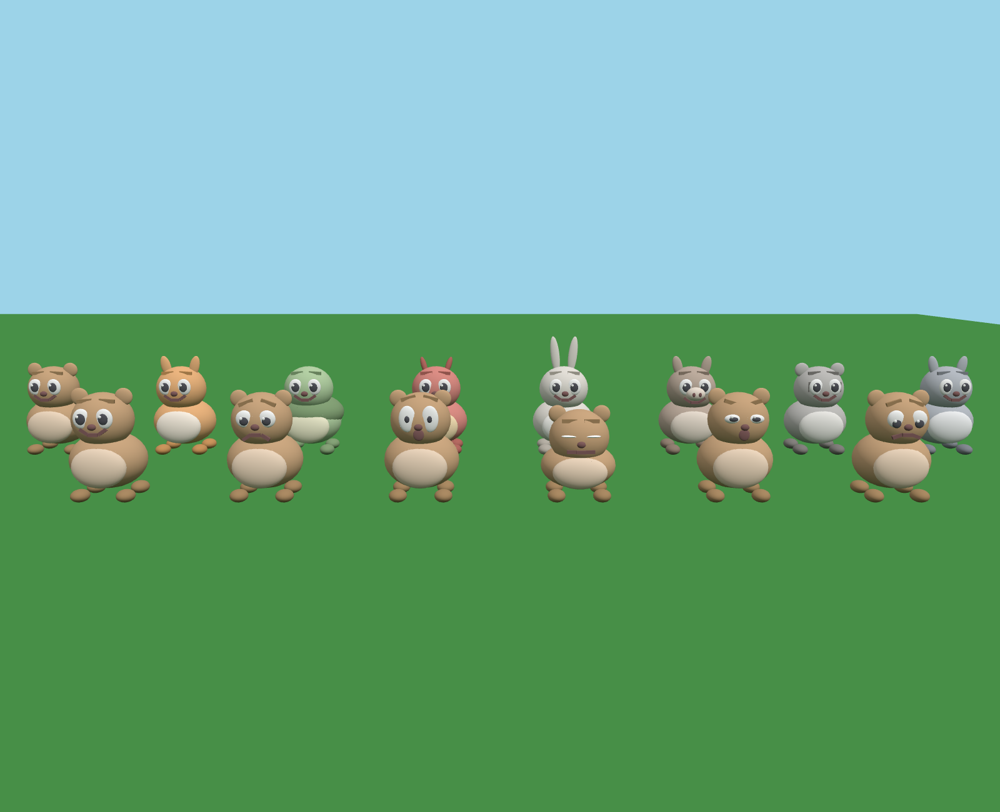

Ферма в Roblox · v0.8
2 окт, 02:40 · все версии фермы в Roblox
⬇ Скачать место (one_beast_farm_v0.8.rbxlx)
Скачать файл и открыть двойным щелчком: откроется Roblox Studio. Нажать Play (F5).
На участке живёт твой зверь (вид пока выбирается сам). Слева портрет и кнопки 👍 Похвалить, 👎 Отругать, 🤗 Погладить, 📣 Позвать, 📋 Карточка. Хвалить можно всегда: сразу после поступка (жёлтая плашка) это меняет привычку, без повода — просто ❤️. Клик по миске — насыпать корм, по кучке — убрать, по пауку — прогнать. Вдвоём (Test → Clients and Servers) у чужого зверя появляются кнопки гостя.

Картинка — предпросмотр формы вне Studio, в игре свет и материалы Roblox.